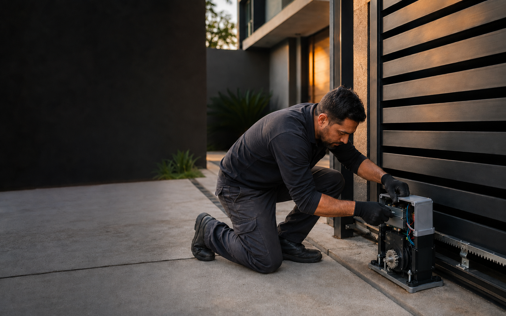

Troca de cabo de aço
Substituição de cabos desgastados por modelos resistentes para evitar falhas e manter o funcionamento seguro.

Venda, instalação e manutenção de motores e portões automáticos com equipamentos duráveis e serviço especializado.
Atendimento técnico para recuperar a eficiência do portão, prevenir falhas e prolongar a vida útil do conjunto.
Substituição de cabos desgastados por modelos resistentes para evitar falhas e manter o funcionamento seguro.
Diagnóstico e troca da central eletrônica por modelos modernos e compatíveis com seu equipamento.
Configuração e reposição de controles para abertura rápida, prática e segura.
Ajustes, lubrificação e substituição de peças para prevenir paradas e aumentar a durabilidade.
Automação dimensionada para o peso, formato e frequência de uso do seu portão.
Substituição de peças desgastadas para recuperar precisão, movimento suave e eficiência.
Residência, condomínio, comércio ou empresa: o conjunto correto oferece conforto, segurança e melhor desempenho.
Ideal para portões que correm lateralmente. Oferece abertura prática, controle remoto e excelente confiabilidade.
Indicado para folhas de abertura lateral, com operação silenciosa e controle preciso.
Automatiza portões de movimento vertical com abertura suave e segura para imóveis residenciais ou comerciais.
Automação de portas de enrolar para lojas e galpões, trazendo agilidade e proteção ao negócio.
Componente essencial para transmitir o movimento do motor com precisão e suavidade.
Estrutura resistente, elegante e preparada para receber acabamento anticorrosivo e pintura.
Peso, tamanho, modelo do portão e frequência de abertura influenciam diretamente na escolha do equipamento.